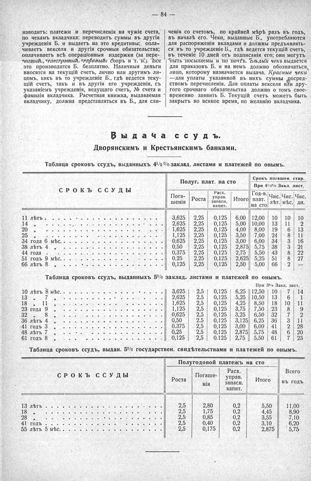

Лист источника 130
Скан

Распознанный текст
— 84 —
изводить: платежи и перечисленія на чужіе счета,
по чекамъ вкладчика: переводитъ суммы въ другія
учрежденія Б. и выдаетъ на это кредитивы; опла-
чиваетъ векселя и другія срочныя обязательства;
оплачиваетъ всѣ операціонныя издержки (за пере-
водный, телеграмный гербовый сборъ и т. п.). Все
это производится Б. безплатно. Наличныя деньги
вносятся на текущій счетъ, лично или другимъ ли-
цомъ, какъ въ то учрежденіе Б., гдѣ ведется теку-
щій счетъ, такъ и въ другія его учрежденія, съ
указаніемъ учрежденія, ведущаго счетъ, № счета и
фамилія вкладчика. Расчетная книжка, выдаваемая
вкладчику, должна представляться въ Б., для сли-
ченія со счетомъ, по крайней мѣрѣ разъ въ годъ,
въ началѣ его. Чеки, выданные Б., употребляются
для распоряженія вкладами и должны предъявлять-
ся въ то учрежденіе Б., гдѣ ведется текущій счетъ,
въ теченіе 10 дней отъ подписанія его; они могутъ
быть посылаемы и по почтѣ. Бѣлый чекъ выдается
для приказовъ Б. и на немъ должно обозначаться
лицо, которому назначается выдача. Красные чеки
—для уплаты указанной въ нихъ суммы посред-
ствомъ перечисленія. Для оплаты векселя или дру-
гого срочнаго обязательства должно о томъ свое-
временно заявить Б. Текущій счетъ можетъ быть
закрыть во всякое время, по желанію вкладчика.
Выдача ссудъ.
Дворянскимъ и Крестьянскимъ банками.
Таблица сроковъ ссудъ, выданныхъ 4 1/2 % заклад. листами и платежей по онымъ.
Полуг. плат. на сто Срокъ погашен. стар.
При 4 1/2 % Закл. лист.
СРОКЪ ССУДЫ Пога- Роста Расх. управ. запасн. Итого Год-в. плат. на сто Чис. лѣт. Чис. мѣс. Чис. дн.
шенія капит.
11 лѣтъ . . . . . . . . . . . . . . . . . . 3,625 2,25 0,125 6,00 12,00 10 10 10
14 „ . . . . . . . . . . . . . . . . . 2,625 2,25 0,125 5,00 10,00 13 11 2
20 „ . . . . . . . . . . . . . . . . . 1,625 2,25 0,125 4,00 8,00 19 6 13
25 „ . . . . . . . . . . . . . . . . . 1,125 2,25 0,125 3,50 7,00 24 8 11
34 года 6 мѣс. . . . . . . . . . . . . . . 0,625 2,25 0,125 3,00 6,00 34 3 16
38 лѣтъ 4 „ . . . . . . . . . . . . . . 0,50 2,25 0,125 2,875 5,75 38 3 21
44 года . . . . . . . . . . . . . . . . 0,375 2,25 0,125 2,75 5,50 43 8 22
51 годъ 9 мѣс. . . . . . . . . . . . . . . 0,25 2,25 0,125 2,625 5,25 51 8 27
66 лѣтъ 8 „ . . . . . . . . . . . . . . 0,125 2,25 0,125 2,50 5,00 66 2 —
Таблица сроковъ ссудъ, выданныхъ 5% заклад. листами и платежей по онымъ.
При 5% Закл. лист.
10 лѣтъ 8 мѣс. . . . . . . . . . . . . . . 3,625 2,5 0,125 6,25 12,50 10 7 14
13 „ 7 „ . . . . . . . . . . . . . . 2,625 2,5 0,125 5,25 10,50 13 6 1
18 „ 11 „ . . . . . . . . . . . . . . 1,625 2,5 0,125 4,25 8,50 18 10 11
23 года 9 „ . . . . . . . . . . . . . . 1,125 2,5 0,125 3,75 7,50 23 8 9
32 „ 8 „ . . . . . . . . . . . . . . 0,625 2,5 0,125 3,25 6,50 32 7 2
36 лѣтъ 4 „ . . . . . . . . . . . . . . 0,50 2,5 0,125 3,125 6,25 36 3 11
41 годъ 3 „ . . . . . . . . . . . . . . 0,375 2,5 0,125 3,00 6,00 41 2 28
48 лѣтъ 7 „ . . . . . . . . . . . . . . 0,25 2,5 0,125 2,875 5,75 48 6 20
61 годъ 8 „ . . . . . . . . . . . . . . 0,125 2,5 0,125 2,75 5,50 61 7 23
Таблица сроковъ ссудъ, выдан. 5% государствен. свидѣтельствами и платежей по онымъ.
Полугодовой платежъ на сто Всего
СРОКЪ ССУДЫ Роста Погаше- Расх. управ. Итого въ годъ
нія запасн. капит.
13 лѣтъ . . . . . . . . . . . . . . . . . 2,5 2,80 0,2 5,50 11,00
18 „ . . . . . . . . . . . . . . . . . 2,5 1,75 0,2 4,45 8,90
28 „ . . . . . . . . . . . . . . . . . 2,5 0,85 0,2 3,55 7,10
41 годъ . . . . . . . . . . . . . . . . . 2,5 0,40 0,2 3,10 6,20
55 лѣтъ 5 мѣс. . . . . . . . . . . . . . . 2,5 0,175 0,2 2,875 5,75